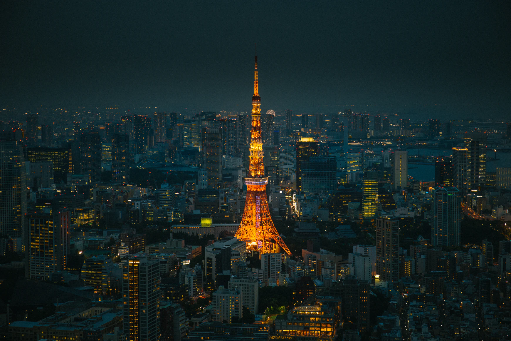
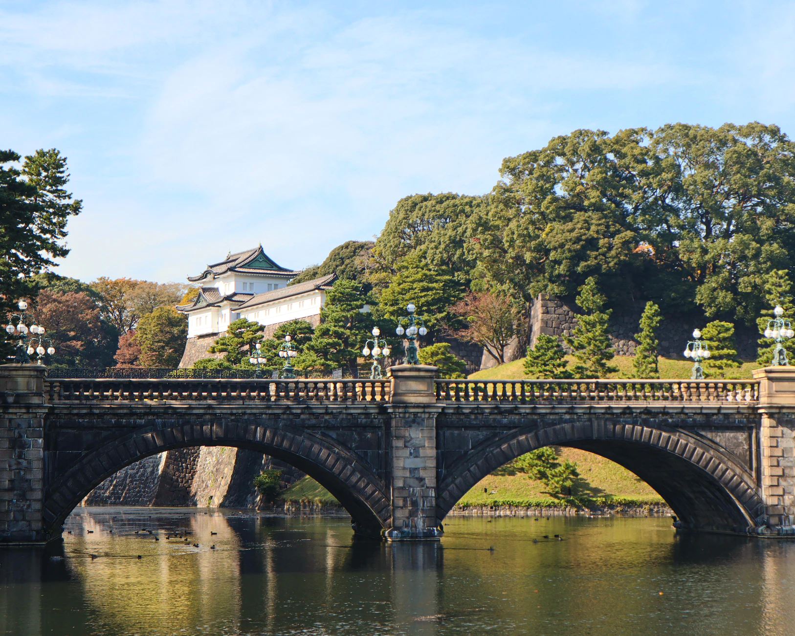
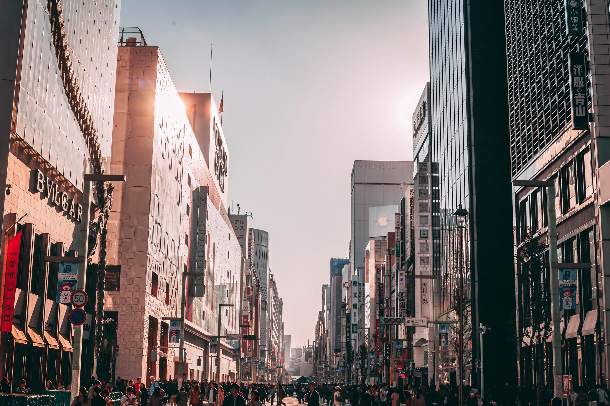

Popular, immersive museum known for its colorful, futuristic digital art installations & photo ops.
Location: Aomi Station, Odaiba, Tokyo, Japan
General admission cost: ages 15 and up: $27.72
Age group: All ages
Tokyo Tower

The Beautiful Tokyo Tower was completed in 1958 and remains a very popular lookout point. Just a short
distance
from such well-known districts as Roppongi and Toranomon.
Location: Shiba-koen district of Minato, Tokyo, Japan
Cost: $8 for adults and $3 for 4 years old and younger
Age group: All ages
The Imperial Palace

The chief attraction of Tokyo's Marunouchi district is the Imperial Palace (Kōkyo) with its beautiful
17th-century parks surrounded by walls and moats. Still in use by the Imperial family, the Imperial Palace
stands
on the site where, in 1457, the Feudal Lord Ota Dokan built the first fortress, the focal point from which the
city of Tokyo (or Edo, as it was then) gradually spread.
Location: Chiyoda district of the Chiyoda ward of Tokyo, Japan
Age group: All ages
Ginza District

Ginza is Tokyo's busiest shopping area and it's as iconic as Times Square in New York, and much older. It has
in
fact been the commercial center of the country for centuries, and is where five ancient roads connecting
Japan's
major cities all met. Lined by exclusive shops and imposing palatial stores, the Ginza district is also fun to
simply wander around or. Better still, sit in one of its many tea and coffee shops or restaurants while
watching
the world rush past.